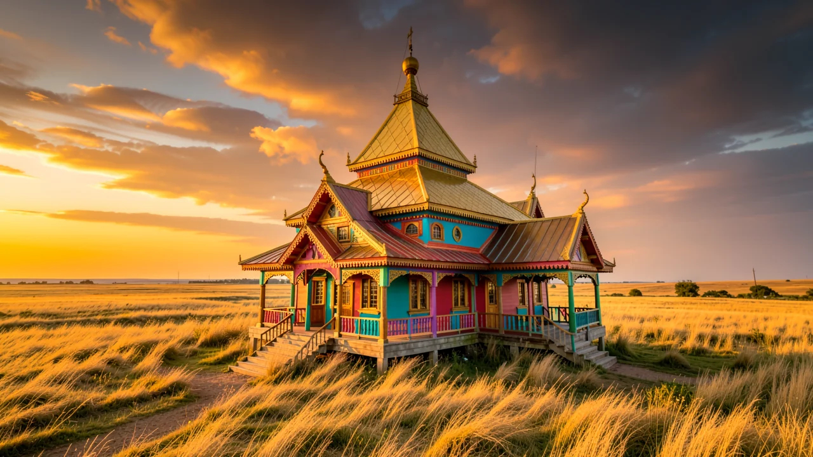
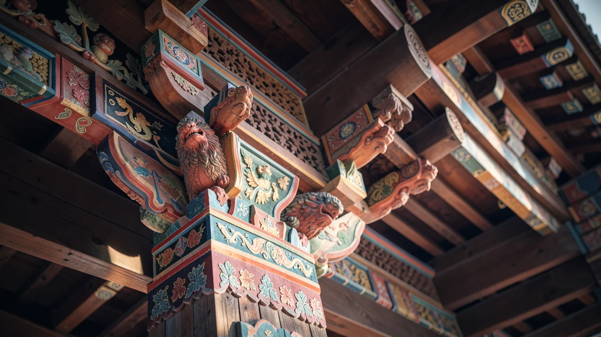

The Napoleonic Temple: Europe's Weirdest Buddhist Anomaly
AI-generated: the text, images and other media on this page were created with artificial intelligence and may contain errors.
Deep in the Russian steppe, a temple stands as a monument to a regiment that fought Napoleon and a religion that shouldn't-geographically speaking-be there.

A glitch in the European map
Imagine you're looking at a map of Europe. You see the cathedrals, the Renaissance palaces, and the inevitable heavy metal festivals. Now, look at Astrakhan Oblast in the Russian steppe, near the Volga delta and right next to the Republic of Kalmykia. This is where you'll find the Khosheutovsky khurul, often described as the oldest surviving Buddhist temple in Europe. It's basically a geographical error that refused to be corrected, a beautiful architectural glitch that makes you wonder if someone accidentally dragged a piece of Central Asia onto a European layer in Photoshop.

Why is there a temple in the middle of a war story?
To understand why this temple exists, you don't just have to look at religion; you have to look at 1812. Most people remember Napoleon's invasion of Russia as a disaster of frostbite and retreating armies. But there was a specific group of players in this drama: the Kalmyk regiment. These were cavalrymen who fought Napoleon with such ferocity that the monument wasn't just built for religious reasons-it was built as a memorial to the fallen.
So the temple is a war memorial and a place of worship at the same time, with Buddhist iconography inside and a profound sense of spiritual continuity. This isn't just about religious architecture being pretty; it's about a specific cultural identity surviving through some of the most chaotic centuries in human history.
The temple serves as a memorial to the Kalmyk regiment that fought against Napoleon's invading forces.
The architecture of 'Wait, what?'
If you walked into a standard European church, you'd expect stained glass and perhaps a gargoyle that looks like it's judging your outfit. The Khosheutovsky khurul offers a different experience. It's an architectural anomaly that defies the surrounding landscape. Built between 1814 and 1818, it actually looks like a small version of Kazan Cathedral in Saint Petersburg: columns, a dome and a neoclassical facade, with a Buddhist sanctuary inside. That mix is a wild thing to see in the middle of the steppe.
Here is how the vibe shifts: 1. You start with the vast, windswept steppe. 2. You encounter the sudden, sharp geometry of the khurul. 3. You realize the structure is actually a bridge between the nomadic traditions of the East and the settled histories of the West.
It's essentially cultural synthesis in physical form. It's not just a building; it's a statement that says, 'We are here, we are Buddhist, and we are very much part of the European story, even if the mapmakers forgot to mention it.'

Why you should care (besides the Instagram photos)
I know what you're thinking: 'It's a cool building, but does it affect my life?' Unless you're a historian or a nomadic cavalryman, probably not directly. But there is a lesson here about how we define boundaries. We love to put things in boxes-'This is Europe,' 'This is Asia,' 'This is Eastern,' 'This is Western.' The khurul is a living, breathing rebuttal to that kind of rigid thinking.
In an era where digital borders are becoming more fluid and the concept of 'identity' is being debated by every algorithm on your phone, looking at a temple that exists at the intersection of two worlds is a great way to reset your brain. It reminds us that history is rarely a straight line and that the most interesting things happen in the margins.
It is often described as the oldest surviving Buddhist temple in Europe.
So, the next time you think you have a handle on how the world is divided, remember the Kalmyk regiment and their temple. The world is much messier, much more layered, and much more beautiful than a simple map would lead you to believe.
Does the idea of 'cultural anomalies' make you feel more connected to a global history, or does it just make the world feel more confusing? I'll leave that for you to ponder while you navigate your own much more predictable borders.
Take the companion quiz for this story and see how you score.
Take the QuizSources
You might also like